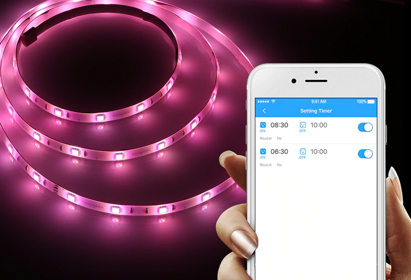
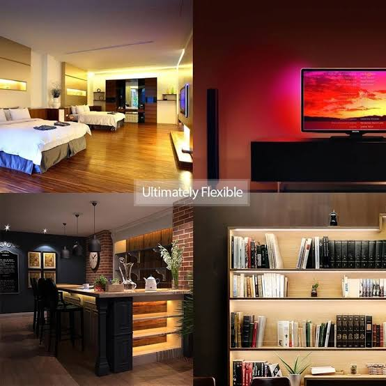

"KOOGEEK SMART LIGHT STRIP"
1. Ahmad Fachrizal Pratama (Nim 161112383)
2. Eka Ramadhan (Nim 161112707)
3. Aldi (Nim 161111264)
4. Nur Asri (Nim 161110544)
5. Ira Juliana Tambunan (Nim 161112855)
Deskripsi Product Koogeek Smart Light Strip
Koogeek Smart LED Lampu Strip merupakan lampu yang dapat digunakan melalui Wi-Fi yang diaktifkan dan berkemampuan HomeKit warna berubah dan dimmable lampu LED strip di dukung dengan USB. Dengan panjang 2 m dan pita perekat di bagian belakang, Setelah mengkonfigurasi dari Koogeek aplikasi Rumah lebih dari 2.4 GHz jaringan Wi-Fi anda dari jarak jauh dapat mengubah smart light strip on atau off, mengubah warna dan suhu warna dimana kecerahan dapat di ataur melalui timer.
Kegunaan dan fungsi dari Koogeek Smart Light Strip
Sejenis lampu hias yang akhir – akhir ini berkembang di dalam masyarakat yang kegunaanya untuk menerangi dan mempercatik ruang tv, ruang kamar maupun ruangan kerja dengan berbagai macem warna yang dapat diatur melalu aplikasi dari android.
Fitur Koogeek Smart Light Strip
1. Remote Control
Di mana pun Anda memiliki akses Internet, Anda dapat mengontrol & memantau strip cahaya yang terhubung dari jarak jauh dengan perangkat iOS atau perangkat Android. Kompatibel dengan perangkat iOS 9.0 atau Android 4.3 atau yang lebih baru.
2. Jadwalkan Hidup / Mati
Atur jadwal dan pengatur waktu kustom untuk strip cahaya atau pemandangan untuk menghidupkan atau mematikan strip lampu yang terhubung pada waktu tertentu secara otomatis.
3. Mendukung Pengubahan Warna dan Dimmable
Menawarkan 16 juta warna untuk memilih dari dan setiap warna dimmable, anda dapat mencocokkan cahaya suasana hati Anda dan personalisasi rumah Anda.
4. Kecerahan Tinggi & Hemat Energi
Didukung oleh sumber daya USB, 60 buah LED SMD 5050 menghasilkan hingga 500 lumen cahaya. Hemat energi & masa pakai hingga 25.000 jam.
5. Siri
Melalui Siri kamu bisa mengatur light strip ini, mulai dari menyalakan, mematikan, mengubah warna, serta mengubah tingkat kecerahannya.
Spesifikasi Koogeek Smart LED Strip
- Item Weight : 7.2 pounces
- Product Dimensions : 5.9 x 5.7 x 1.4 inches
- Color : White
- Style : Modern
- Material : Plastic
- Shape : Linear
- Power Source : corded-electric
- Voltage : 5 volts
- Wattage : 10 watts
- Type of Bulb : LED
- Special Features : Dimmable
- Batteries Required : No
Kelebihan dari Koogeek Smart LED
1. Mudah digunakan
2. Kecerahan tinggi & hemat energi.
3. Works with Apple HomeKit mendukung siri kontrol suara.
4. Kontrol melalui aplikasi.
5. Dukungan warna berubah dan Dimmable.
6. Fleksibel.
7. Mengotomatisasi dan dapat mengakses dari jarak jauh.
8. Setup yang sederhana.
Kekurangan dari Koogeek Smart LED
1. Memastikan cahaya strip dalam jangkauan koneksi Wi-Fi kita.
2. Tidak digunakan dalam tertutup perlengkapan.
3. Tidak menekuk lampu strip untuk sudut kurang dari 30 derajat.
4. Tidak memotong strip cahaya saat terhubung ke sumber listrik.
5. Beberapa fungsi saat ini tidak tersedia di Apple Watch.
Keunggulan Kompetitif Kogeek Smart Light Strip Dengan produk smart Light Lainnya
Keunggulan Kogeek Smart Light Strip dibanding produk smart light lainnya adalah kogeek smart light ini berbentuk kabel yang dapat dipotong dan ditempel dimana sama sesuai keinginan pengguna. Meskipun telah dipotong, smart light ini masih dapat berfungsi dengan baik dan masih dapat diatur dari aplikasi Kogeek Smart Light.
Bullet List
Powered by bespoke-bullets
- Bullet 1
- Bullet 2
- Bullet 3
Syntax Highlighting
Powered by Lea Verou's Prism
(function() {
function hanoi(n, a, b, c) {
return n ? hanoi(n - 1, a, c, b)
.concat([[a, b]])
.concat(hanoi(n - 1, c, b, a)) : [];
}
return hanoi(3, 'left', 'right', 'mid')
.map(function(d) {
return d[0] + ' -> ' + d[1];
});
})();Named Route
Powered by bespoke-hash
Look up! This route has been named with a data-bespoke-hash attribute.
Just the beginning…
- Edit HTML markup in src/index.html
- Edit Stylus styles in src/styles/user.styl
- Edit JavaScript in src/scripts/main.js
- Enjoy! :) -@markdalgleish